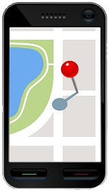

Voter Verify< Return to Services
Voter Verify is a unique SmartPhone app that allows a person in the field to verify the voting status of a constituent from any web enabled mobile device. The user simply logs on to www.vboost.org from their SmartPhone web browser, and enters the constituent's first & last name and the house number of the address and clicks 'Verify Voter'. The request is querried against our voter database, and returns the voter's information if they are registered to vote. If the constituent is not a registered voter, the field representative can enter additional information, and click 'Send Voter Registration Info', and the constituent will be mailed the necessary documents to register to vote.
Voter Verify can also collect data from which you can create lists of constituents that are supporters or undecided, need yard signs, would like to volunteer on the campaign, or would like to donate to your campaign.
To demo Voter Verify, logon from your SmartPhone to www.vboost.org -
Username: test
Password: test
and enter the First Name, Last Name, and House Number (just house number NOT street name) of a Maryland resident. Then click 'Verify Voter'.
NOTE: DEMO ONLY AVAILABLE IN MARYLAND
Voter Verify is a quick & convenient way to enhance your GOTV efforts, and ensure you are collecting qualified petition signatures.
Contact Us
 Give your campaign a winning boost with our professional suite of products and services.
Give your campaign a winning boost with our professional suite of products and services.
Contact Us